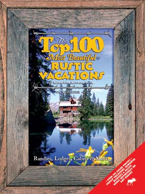

If your idea of a great vacation involves ritzy nightlife, great shopping and exhilarating amusement rides, this isn’t the book for you. But if you can’t think of a better way to unwind than a horseback ride through the mountains or catching fireflies at dusk, check out The Top 100 Most Beautiful Rustic Vacations of North America (Rusty Duck Press).
With more than 200 pages featuring the best destinations for outdoor adventure seekers as well as those who simply want relaxation and fresh air, you’ll find the perfect spot for your summer getaway. Author Dusty Dave even includes a section with outdoor vacation essentials such as jokes, games, ghost stories and safety tips.
In no time at all you’ll find yourself miles away from the stressful world, enjoying a day of fishing, hiking or canoeing, followed by peaceful slumber in a quiet cabin.
|
 RUSTY DUCK PRESS Plan your 2008 vacation with Top 100 Most Beautiful Vacations of North America. |
|
|